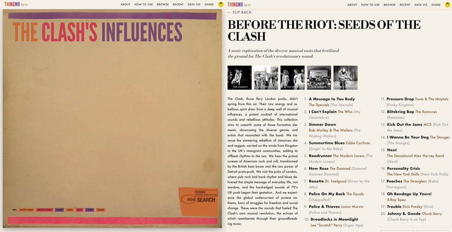

Projects
Exploratory product work where we test ideas about AI, trust, workflow design, and structured creativity. Not side hobbies — design explorations that inform how we think about product problems.

Exploratory product work where we test ideas about AI, trust, workflow design, and structured creativity. Not side hobbies — design explorations that inform how we think about product problems.

An AI-assisted writing system built to preserve the integrity of a writer's voice. The writer stays in control; AI assists without overwriting. Designed around authorship, not output.
View project →
A research-driven music discovery tool that builds playlists from real-world inputs: artist lineages, historical charts, and scenes defined by time and place. No algorithm. No feed.
View project →
A makerspace organizational memory app. Stations, gear, cables, and instructions — so the room works for everyone who walks in, not just the people who already know where everything is.
View project →
Historically grounded physical modeling instruments and web-based creative audio tools. Built from primary sources. Anomalies are features.
View project →